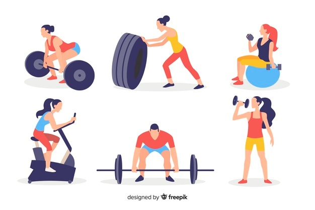
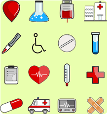

In the past several years, I have been forced to realize that a person's health isn't always as stable as it seems. A person that is dear to me was diagnosed with MS, one was diagnosed with Bipolar II disorder and sleep apnea, and another had a stroke that paralyzed her left side. I'm not saying this to get sympathy, but for people to realize that they need to take better care of themselves. Which is why I am proud to introduce a little help with keeping track of one's health in the form of a web application called World of Health, a combination of a fitness tracker and medical information tracker.
 Source: clipartart.comFitness is a huge part of staying healthy. Which is why it is so imprtant to exercise and eat right. World of Health is going to be here to help. It will have a weight tracker, waist size tracker and BMI tracker. It will have a place to keep track of your 1-mile run times and 1-minute sit-ups and push-ups. For those that are more interested in lifting heavy things, it will have a tracker for weights as well as reps on squats, bench press, leg press, and deadlift. Finally, it is going to have a place to track your exercises such as bicycling, distance running, planks, etc.
 Source: publicdomainvectors.orgFor some people, keeping track of medical necessities can be hard to accomplish. That is where World of Health comes in. World of Health will have a medical item (pills, CPAP mask, etc) tracker so that you will always know how much you have or when you need to replace it or order more. It will send out reminder emails when your stock of pills is getting low or when your oxygen tank, for example, needs to be recharged. It will also have a place to keep track of what doctors you see, how to get ahold of them and your appointments with them. As with the medical items, it will send an email the day before your appointment to remind you. World of Health will have a place to track your symptoms so that you can have a record of when you have them. In addition, it will have a place to keep track of illnesses, whether it be something that is permanant or temporary.